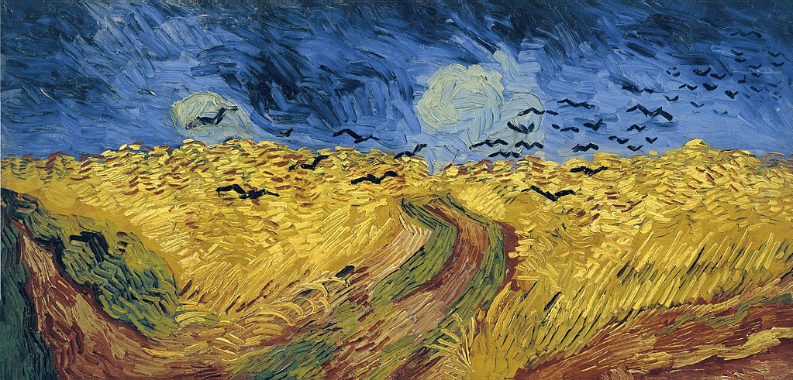

<head>
<meta charset="UTF-8" />
<meta name="keywords" content="drawing, painting" />
<meta name="description" content="drawings by Sunjy" />
<title>Sunjy</title>
<link rel="shortcut icon" type="image/x-icon" href="../../mImages/mCommon/favicon.ico" media="screen" />
<link rel="stylesheet" type="text/css" href="../../mCsses/mCommon/mCssA.css" />
<link rel="stylesheet" type="text/css" href="../../mCsses/mCommon/mCssB.css" />
<link rel="stylesheet" type="text/css" href="../../mCsses/mCommon/mCssC.css" />
<link rel="stylesheet" type="text/css" href="../../mCsses/mCommon/mCssD.css" />
<link rel="stylesheet" type="text/css" href="../../mCsses/mContent/mCssA.css" />
<link rel="stylesheet" type="text/css" href="../../mCsses/mContent/mCssB.css" />
<link rel="stylesheet" type="text/css" href="../../mCsses/mContent/mCssC.css" />
<link rel="stylesheet" type="text/css" href="../../mCsses/mContent/mCssD.css" />
</head>
<script type="text/javascript" src="../../mScripts/mContent/mContentAA.js" /></script>
<script type="text/javascript" src="../../mScripts/mContent/mContentAB.js" /></script>
<script type="text/javascript" src="../../mScripts/mContent/mContentAC.js" /></script>
<script type="text/javascript" src="../../mScripts/mContent/mContentAD.js" /></script>
<script type="text/javascript"></script> 
<script type="text/javascript">
document.write('<div class="mImgAbsolute"></div>');
/*
document.write('<p class="mFontSizeBColor" />From a white paper...</p>');
document.write('<table class="center"><tr><td>');
document.write('');
document.write('</td></tr></table>');
*/
</script>


<script type="text/javascript">
document.write('<p class="mFontSizeBColor" />Wheatfield with Crows</p>');
document.write('<p class="mFontSizeSColor" />By Vincent van Gogh. “Wheatfield with Crows” depicts a dramatic, cloudy sky filled with crows over a windswept wheat field.<br><br>The sense of isolation in the painting is heightened by the path, in contrasting colors of red and green, leading nowhere. Also, the flight path and direction of the crows are uncertain, adding to the uneasy.<br><br>Van Gogh painted this windblown wheat field in July 1890, during the last few weeks of his life. Many have claimed it as his final painting and perhaps one of his greatest works.<br><br>In a June 1880 letter, Van Gogh’s compared himself to a bird in a cage. Van Gogh used the crows as a symbol of life, death, and rebirth. One of van Gogh’s favorite authors (Jules Michelet), wrote of crows: <br><br>“They interest themselves in everything and observe everything. The ancients, who lived far more completely than ourselves in and with nature, found it no small profit to follow, in a hundred obscure things where human experience as yet affords no light, the directions of so prudent and sage a bird.”<br><br>Van Gogh wrote to his brother, saying that he had painted another three large canvases at Auvers. Two of these are described as immense stretches of wheatfields under turbulent skies. He expressed sadness, adding:<br><br>“extreme loneliness” (de la solitude extrême)<br><br>Van Gogh also stated that he believed that the canvases showed what he considers was healthy and fortifying about the countryside.<br><br>This painting is an example of van Gogh’s elongated double-square canvas compositions, used only in the last few weeks of his life, in June and July 1890.<br><br>Art historians are uncertain as to which painting was van Gogh’s last, as no clear historical records exist. The evidence of his letters suggests that “Wheatfield with Crows” was completed around 10 July, and Van Gogh died 29 July 1890, aged 37.</p>');
document.write('<table class="center" /><tr><td>');
document.write('<br>The sense of isolation in the painting is heightened by the path, in contrasting colors of red and green, leading nowhere. Also, the flight path and direction of the crows are uncertain, adding to the uneasy.<br><br>Van Gogh painted this windblown wheat field in July 1890, during the last few weeks of his life. Many have claimed it as his final painting and perhaps one of his greatest works.<br><br>In a June 1880 letter, Van Gogh’s compared himself to a bird in a cage. Van Gogh used the crows as a symbol of life, death, and rebirth. One of van Gogh’s favorite authors (Jules Michelet), wrote of crows: <br><br>“They interest themselves in everything and observe everything. The ancients, who lived far more completely than ourselves in and with nature, found it no small profit to follow, in a hundred obscure things where human experience as yet affords no light, the directions of so prudent and sage a bird.”<br><br>Van Gogh wrote to his brother, saying that he had painted another three large canvases at Auvers. Two of these are described as immense stretches of wheatfields under turbulent skies. He expressed sadness, adding:<br><br>“extreme loneliness” (de la solitude extrême)<br><br>Van Gogh also stated that he believed that the canvases showed what he considers was healthy and fortifying about the countryside.<br><br>This painting is an example of van Gogh’s elongated double-square canvas compositions, used only in the last few weeks of his life, in June and July 1890.<br><br>Art historians are uncertain as to which painting was van Gogh’s last, as no clear historical records exist. The evidence of his letters suggests that “Wheatfield with Crows” was completed around 10 July, and Van Gogh died 29 July 1890, aged 37." />');
document.write('</td></tr></table>');
</script>


